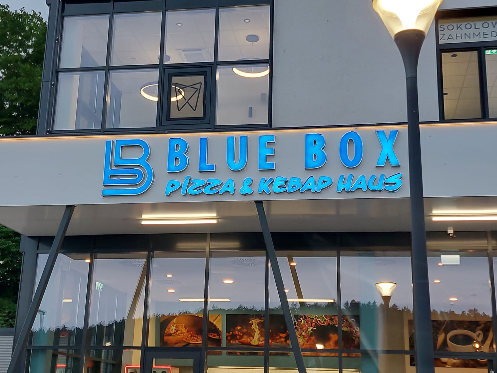

LED vs. traditionelle Leuchtreklame

Die Entscheidung zwischen LED und traditioneller Leuchtreklame ist für viele Unternehmen eine wichtige strategische Wahl. Beide Technologien haben ihre Vor- und Nachteile. In diesem umfassenden Vergleich beleuchten wir alle wichtigen Aspekte.
1. Energieeffizienz und Betriebskosten
LED-Technologie
- Stromverbrauch: 5-8 Watt pro Meter LED-Strip
- Jährliche Kosten: Etwa 50-100 € für mittelgroße Installation
- Effizienz: Bis zu 80% weniger Verbrauch als Neon
Traditionelle Neonröhren
- Stromverbrauch: 20-60 Watt pro Meter
- Jährliche Kosten: Etwa 200-500 € für mittelgroße Installation
- Effizienz: Höherer Stromverbrauch, aber gleichmäßiges Licht
Fazit Energieeffizienz: LED-Technologie spart über die Lebensdauer mehrere Tausend Euro an Stromkosten.
2. Lebensdauer und Wartung
| Kriterium | LED | Traditionell (Neon) |
|---|---|---|
| Lebensdauer | 50.000-100.000 Stunden | 10.000-15.000 Stunden |
| Wartungsintervalle | Sehr selten, ca. alle 5-7 Jahre | Häufiger, ca. alle 2-3 Jahre |
| Austauschkosten | Niedrig, modularer Aufbau | Höher, kompletter Röhrentausch |
| Ausfallrate | Sehr gering | Höher, besonders bei Kälte |
3. Anschaffungskosten
Die initiale Investition unterscheidet sich deutlich:
- LED-Systeme: 1.500-5.000 € für Standard-Installation
- Traditionelle Neonreklame: 800-3.000 € für vergleichbare Größe
Wichtig: Trotz höherer Anschaffungskosten amortisieren sich LED-Systeme durch geringere Betriebs- und Wartungskosten meist innerhalb von 2-4 Jahren.
4. Helligkeit und Lichtqualität
LED-Vorteile:
- Konstante Helligkeit über die gesamte Lebensdauer
- Keine Flackereffekte
- Gleichmäßige Farbwiedergabe
- Dimmbar und programmierbar
- Funktioniert bei allen Temperaturen
Neon-Vorteile:
- Warmes, gleichmäßiges Licht
- Charakteristisches "Glow"-Effekt
- Nostalgischer Vintage-Look
- 360° Lichtabstrahlung
5. Flexibilität und Design
LED-Systeme bieten mehr Gestaltungsmöglichkeiten:
- Millionen von Farbkombinationen möglich
- Animationen und Lichteffekte
- Dünnere Buchstaben und feinere Details
- Einfachere Formgebung
- Integration von digitalen Elementen
Traditionelle Neonröhren haben ihre eigene Ästhetik:
- Authentischer Retro-Look
- Sanfte, durchgehende Lichtlinien
- Handwerkliche Kunstform
- Unverwechselbare Optik

6. Umweltaspekte
LED-Technologie:
- Kein Quecksilber oder andere Schadstoffe
- Vollständig recyclebar
- Geringer CO2-Fußabdruck
- Keine UV-Strahlung
Traditionelle Neonröhren:
- Enthält Edelgase (meist ungefährlich)
- Muss als Sondermüll entsorgt werden
- Höherer Energieverbrauch = mehr CO2
7. Wann ist welche Technologie die richtige?
Wählen Sie LED, wenn:
- Energiekosten ein wichtiger Faktor sind
- Sie moderne, programmierbare Effekte wünschen
- Minimale Wartung erforderlich ist
- Umweltfreundlichkeit wichtig ist
- Sie flexibles Design benötigen
Wählen Sie Neon, wenn:
- Sie einen authentischen Vintage-Look wünschen
- Die Anschaffungskosten begrenzt sind
- Sie den charakteristischen Neon-Glow bevorzugen
- Für Kunst- oder Designprojekte mit besonderer Ästhetik
8. Kostenvergleich über 10 Jahre
Beispielrechnung für eine mittelgroße Leuchtreklame (ca. 3m²):
| Kostenposition | LED | Neon |
|---|---|---|
| Anschaffung | 3.500 € | 2.000 € |
| Stromkosten (10 Jahre) | 800 € | 3.500 € |
| Wartung & Reparatur | 500 € | 2.000 € |
| Gesamtkosten | 4.800 € | 7.500 € |
Fazit
Für die meisten gewerblichen Anwendungen ist LED-Technologie die bessere Wahl. Die höheren Anschaffungskosten werden durch dramatisch niedrigere Betriebs- und Wartungskosten mehr als kompensiert. Zudem bietet LED mehr Flexibilität und ist umweltfreundlicher.
Traditionelle Neonreklame hat jedoch ihre Berechtigung bei speziellen Designprojekten, Bars, Restaurants oder wenn bewusst ein Retro-Look gewünscht wird.
Unsere Empfehlung: Lassen Sie sich individuell beraten! Jedes Projekt ist einzigartig, und wir helfen Ihnen, die optimale Lösung für Ihre spezifischen Anforderungen zu finden.